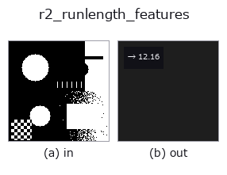

region op• Datenarten: region → feature
• Aufruf: fullseye.apply(img, "r2_runlength_features", a=0.5, b=0.5) (das 2-D-Modell ist ein Bild plus zwei skalare Regler a,b∈[0,1])
• HALCON-Äquivalent: runlength_features (Bedeutung und Parameter sind in der HALCON-Referenz nachzulesen)

*Die Abbildung ist die tatsächliche Ausgabe auf einer synthetischen 128×128-Eingabe. Links Eingabe, rechts Ausgabe. Punktwolken als Draufsicht-Streudiagramm (Helligkeit = z), 1-D-Reihen als Linie, Volumen als Maximum-Projektion entlang z, Videos als mittleres Bild, komplexe Bilder als Betrag; Rückgabewerte, die kein Bild ergeben, werden als Werte gezeigt.*
*Regler a ändert die Ausgabe nicht (gemessen: identisch bei 0,1 / 0,5 / 0,9).*
*Regler b ändert die Ausgabe nicht (gemessen: identisch bei 0,1 / 0,5 / 0,9).*
Stufen (die vorangehenden Ops → dieser Op, von links nach rechts):
▸ r2_runlength_features: Stufen (Doku-Website)
Region → Merkmal: mittlere Länge der horizontalen Vordergrundläufe.
Tastet jede Zeile der Vordergrundmaske (> 0.5) von links ab, sammelt die Längen aller Folgen zusammenhängender Vordergrundpixel (horizontale Runs) und gibt deren Mittelwert (in Pixeln) als 1 Skalar zurück. Anfang/Ende der Runs werden aus den Differenzen der zeilenweise mit Nullen aufgefüllten Zeilen erkannt. a, b werden nicht verwendet.
Der Rückgabewert ist ein numpy.float64. 0.0, wenn kein Vordergrund vorhanden ist. Die Einheit ist Pixel, eine Normierung auf die Bildgröße erfolgt nicht (bei gleicher Form und 2-facher Auflösung ist auch der Wert 2-fach). Vertikale Runs werden nicht gezählt (ein richtungsabhängiges Merkmal, dessen Wert sich zwischen vertikalen und horizontalen Streifen stark unterscheidet). Regionen mit vielen dünnen horizontalen Linien ergeben große Werte, viel punktförmiges Rauschen bringt den Wert nahe an 1. Varianz und Entropie der Run-Längen liefert r3_runlength_distribution, das Entfernen kurzer Runs r3_eliminate_runs. Da es ein Merkmal ist, folgt kein Bild-op darauf.
• Leitfaden zur Familie gallery2d_region
• Katalog der Beispieldaten (Download-URLs / Lizenzen) — 2-D nutzt skimage.data (BSD/Public Domain) plus synthetische Bilder, 3-D nennt Download-URLs echter Datenquellen (Stanford, PDS, …).
• Herkunft und Literatur der Operatoren — die Quellen der Forschung/Verfahren, auf denen diese Operatorfamilie beruht.
• Der kanonische Algorithmus (Autor, Jahr) und seine Anwendungen stehen im Familienleitfaden oben.
Das Programm unten ist nachweislich lauffähig (gleiche Eingabe wie die Abbildung). In der Studio-Hilfe wird dieser Block zu Schaltflächen, die es sofort laden und ausführen.
threshold 0.50 0.50 r2_runlength_features 0.50 0.50
▸ Diese Pipeline laden · Laden & ausführen
• gallery2d_region — py -3.11 examples/gallery2d_region.py
feature als Eingabe)region)reg_erode · reg_dilate · reg_open · reg_close · fill_holes · select_largest · remove_small · invert_region
*Provenance: ops.py — 2D Operator-Registry. Diese Notiz wird von tools/opdocs.py md erzeugt (nicht von Hand bearbeiten).*
© 2026 Kazufumi Furuse — Fullseye operator documentation. Licensed under Apache-2.0.